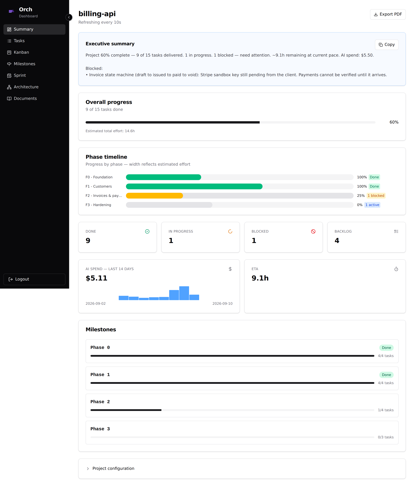
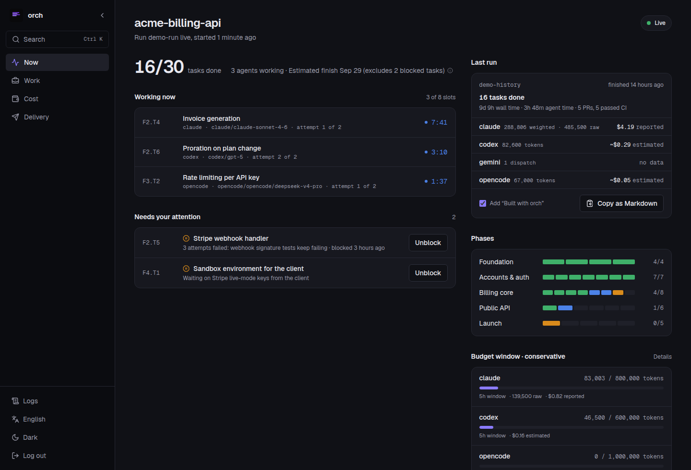

Run AI agents as a team. Show your client a live page, not a status thread.
orch walks a graph of tasks, hands each one to the coding agent you route it to — Claude Code, Codex, OpenCode — in parallel, pauses a provider when its budget window fills, and publishes a page your client can open to see where the work stands.
Already installed? orch dashboard --demo shows a full project without touching yours.
orch run
nextjs-saas template, routed to three agents. A task starts only when everything it depends on is done; the client page counts what is finished.How it works
-
Write the work down
Describe the work as markdown specs — phases, packages, tasks, the model for each and what it depends on.
orch atomizeturns them intotasks.jsonand shows you the diff before anything is written. Or start from one of five project templates, or try a spec in your browser.$ orch init --template nextjs-saas $ orch tasks Tasks (6 shown) ID STATUS BACKEND/MODEL DEPS F0.T1 todo claude/claude-sonnet-4-6 — F1.T1 todo claude/claude-sonnet-4-6 [F0.T1] F1.T2 todo claude/claude-sonnet-4-6 [F1.T1] F2.T1 todo claude/claude-sonnet-4-6 [F0.T1] F2.T2 todo claude/claude-sonnet-4-6 [F1.T1 F2.T1] F3.T1 todo claude/claude-sonnet-4-6 [F0.T1 F2.T1] -
Route each task to an agent
model_router.yamlmaps every model name to the CLI that runs it:claude,codex,opencode,geminioragy, with your own logins and your own keys. Concurrency caps and a rolling token budget per provider decide how much runs at once and when to stop.$ orch explain Tasks: 6 total, 0 done (0%) todo 6 blocked 0 Ready to dispatch: 1 F0.T1 Next.js 14 App Router scaffold + Tailwind + shadcn/ui -
Run it
orch rundispatches every ready task at once, each in its own git worktree and branch. It opens a pull request per task, watches CI, retries what failed for a reason worth retrying, and blocks — with the reason written down — what should not be retried. Ctrl+C drains: nothing new starts, work in flight finishes.$ orch run --worktree-mode $ orch status $ orch events F2.T2 -
Hand your client a link
orch publishwrites the client page as a static site — phases, blockers in plain language, how fresh the numbers are — to a folder or agh-pagesbranch, and keeps it current with--watch. The page it writes has no login and no API: it is files. If your client should watch it live instead,orch dashboard --tunnelopens a Cloudflare quick tunnel whose URL only works with the token it prints.$ orch publish --to git --watch $ orch dashboard --tunnel
What your client sees
The page is built from one snapshot of the project, written for someone who does not care what a worktree is.
- Progress by phase, in the names you gave them.
- Blockers translated out of stack traces into sentences.
- An estimate of the hours left, and how fresh the numbers are.
- Spend only if you choose to show it. It is off by default.
- Your agency's name, logo and colour instead of orch's, if you set them.

What you see
Your own screen answers three questions: which agents are working right now, what is waiting for you, and how much of each provider's budget window is left. Phases fill task by task as the run moves.
Ctrl K opens a palette that jumps to a task, filters the board or copies the CLI command for what you are looking at. When a run ends it leaves a receipt — tasks, wall time, agent time and spend per provider, marked reported or estimated — that you can copy as Markdown.

Where orch stops
- It runs on your machine.
- No daemon and no hosted service. You start
orch run; it stops when the queue is empty or you stop it. - The agents are yours to install.
- orch drives the CLIs you already use and are signed in to. It never holds a model key.
- It is one operator's tool.
- Several projects at once, yes. Several people editing the same plan, no — that is a project tracker's job.
- Gemini needs one decision from you.
- Gemini CLI refuses to run in a directory it was not told to trust, and every task gets a fresh worktree. orch does not switch that check off for you.
Install
One command. orch is a single binary for Linux and macOS, on amd64 and arm64.
curl -fsSL https://raw.githubusercontent.com/hectorcanaimero/orch/main/scripts/install.sh | shIt downloads the latest release, checks it against checksums.txt, and puts orch in ~/.local/bin — set INSTALL_DIR for somewhere else. A Homebrew tap is not published yet.
Build from source instead
git clone https://github.com/hectorcanaimero/orch
cd orch
make build
./bin/orch --versionNeeds Go 1.25+ and pnpm.
Then, in a project: orch init, orch install-skills --all to give your agent the planning skills, and orch doctor to check that every CLI your tasks route to is installed and signed in. orch dashboard --demo opens a finished project of its own, so you can look at the dashboard before you run anything. The manual walks through the rest.
Follow the build
A release a week, in the open: every change, what broke and the numbers behind it.
I am Héctor Rodríguez, a developer in Curitiba. I built orch because I was spending 30 to 40 minutes a week writing status updates for clients while the agents did the work.